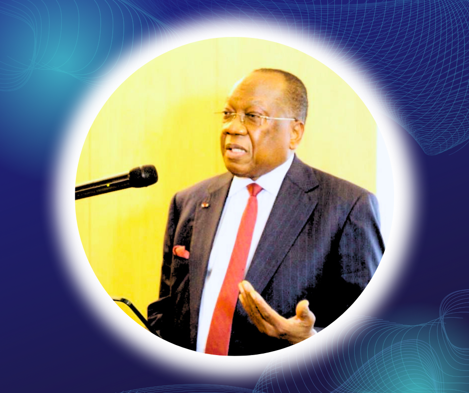
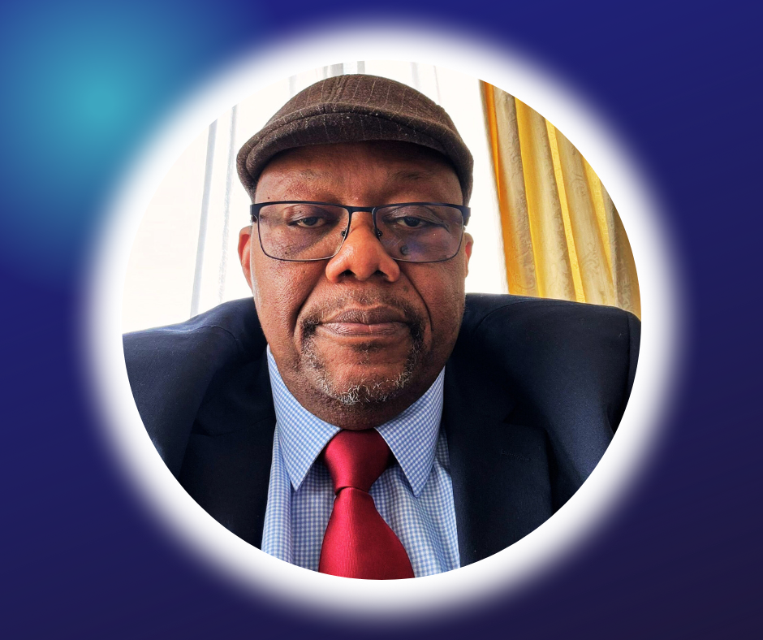

Notre Équipe
Découvrez les visages qui portent la vision de l'UNPG pour une Guinée nouvelle.

M. Lousseny Fall
Président de l'UNPG
Visionnaire et leader charismatique, M. Fall a consacré sa vie à la construction d'une Guinée plus forte et plus prospère.

M Camara Fiston
Chargé de Communnication France
Experte en politique économique, Mme Camara apporte son expertise pour stimuler la croissance et le développement de la Guinée.
M. Mamadou Bah
Secrétaire Général
Juriste de formation, M. Bah veille à l'intégrité et à la transparence des actions de l'UNPG.
Mme Fatou Camara
Porte-parole
Ancienne journaliste, Mme Camara est la voix de l'UNPG, communiquant avec passion notre vision pour la Guinée.